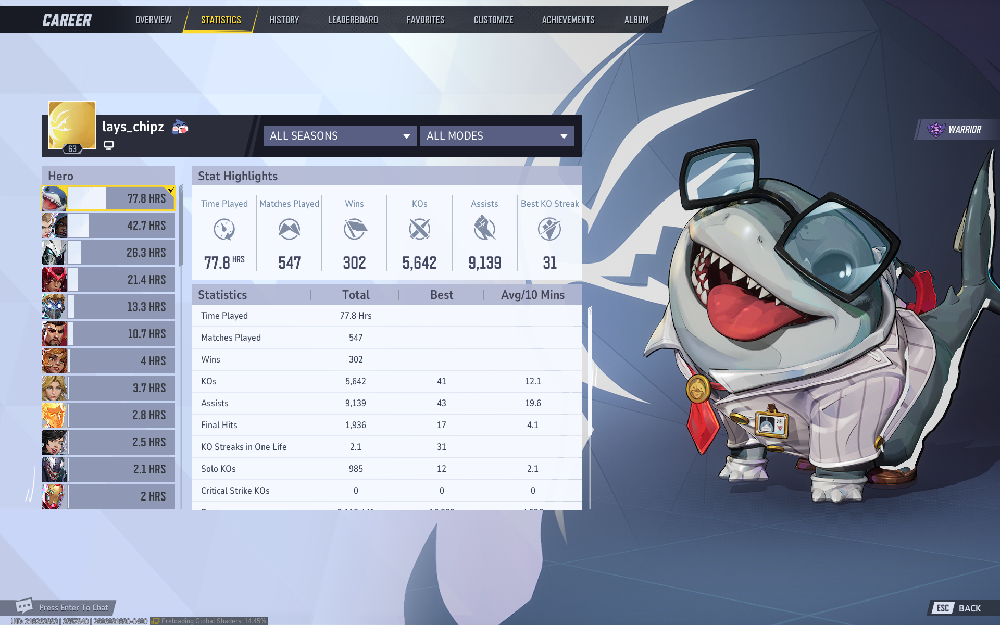
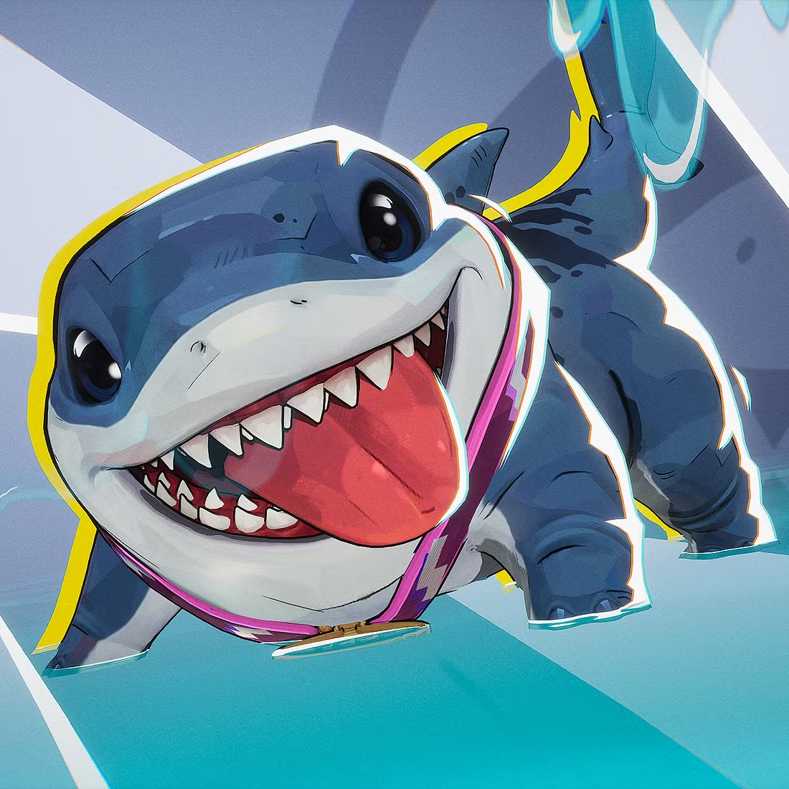
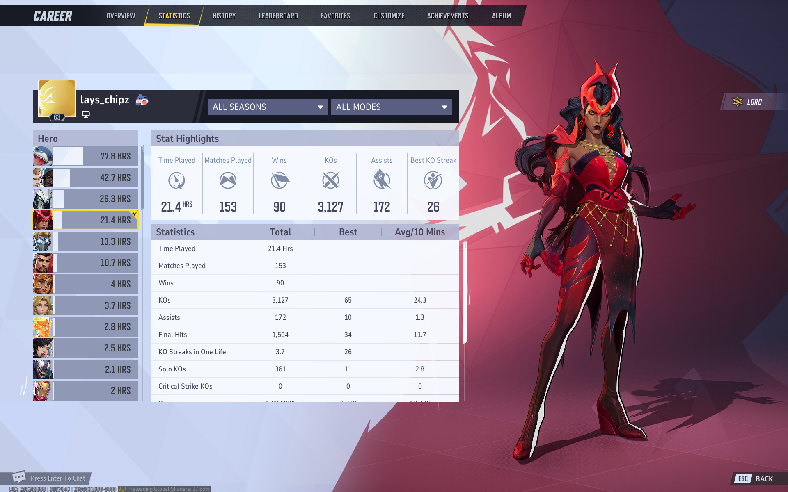
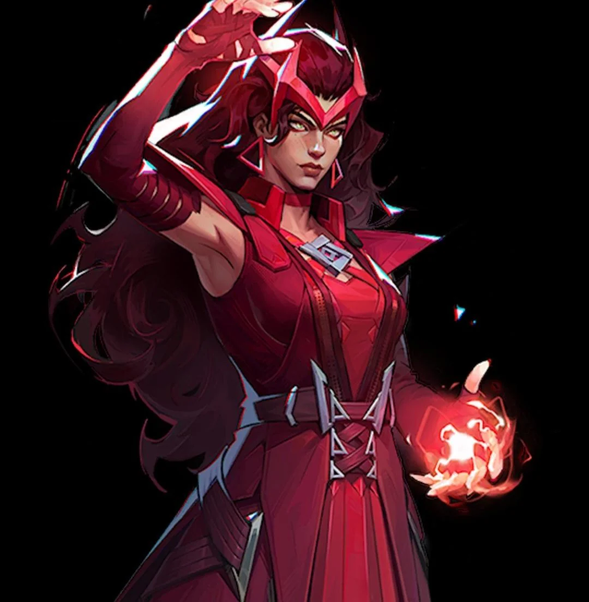
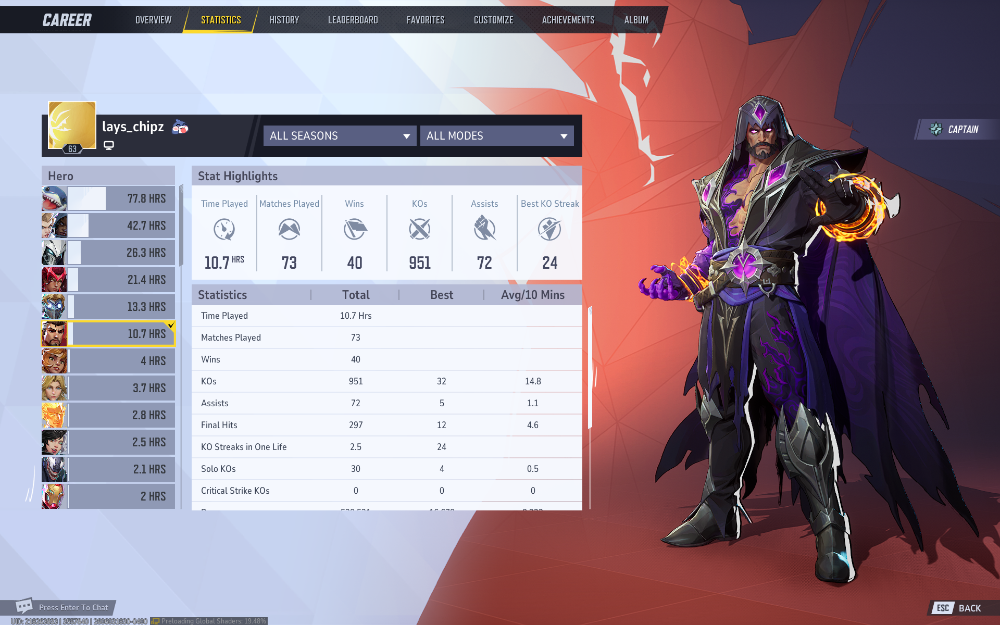
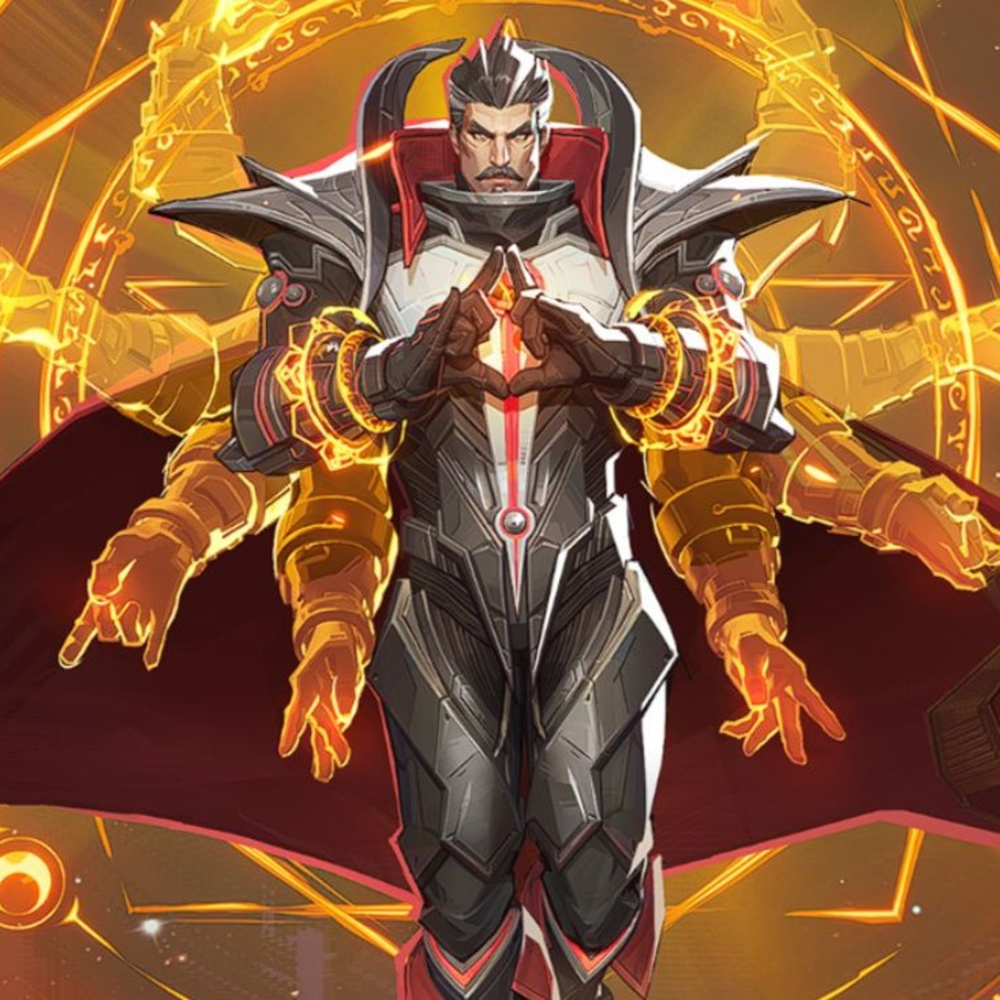

Marvel Rivals
Jeff the Land Shark
Strategist


Jeff is my main in Marvel Rivals. He was the first character that I learned in the game because my friend said he was one of the easiest to play. Since then, I have played him so much that I leveled up to Lord. I focus on healing since people usually don't choose strategist characters and choose DPS instead. Since he had updates to his primary fire I think he has gotten a lot better. His primary has pierce and can heal/damage at the same time. Also I've bought most of the Jeff skins, emotes, and stickers. xD
Scarlet Witch
Duelist


Scarlet Witch is my favorite DPS character. I started playing her because in matches, the opposing Scarlet Witch would always use her ultimate and get a 6k on my team. She is really fun to play because she has an ability that makes her go invincible for a second. Jeff is still my main, but Scarlet Witch is who I play if the team needs a DPS.
Doctor Strange
Vanguard


Doctor Strange is my main for Vanguards. I don't really play tanks a lot, but if the team needs it, I will play him. I started playing him because of a game where my team was about to lose in OT, and we needed to get back to the point quickly. I switched from Jeff to Doctor Strange and just spawned a portal. He is one of my favorite backup characters, and I think it's really fun to find weird places to put portals.